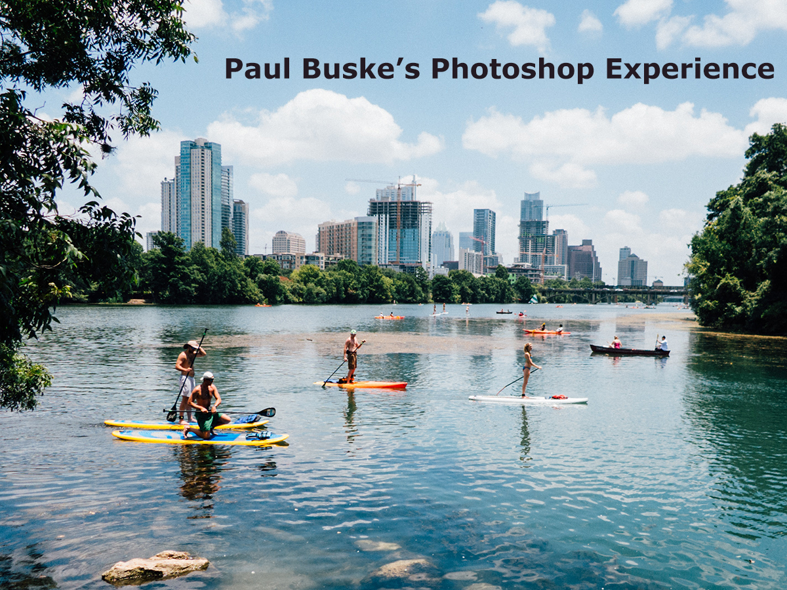
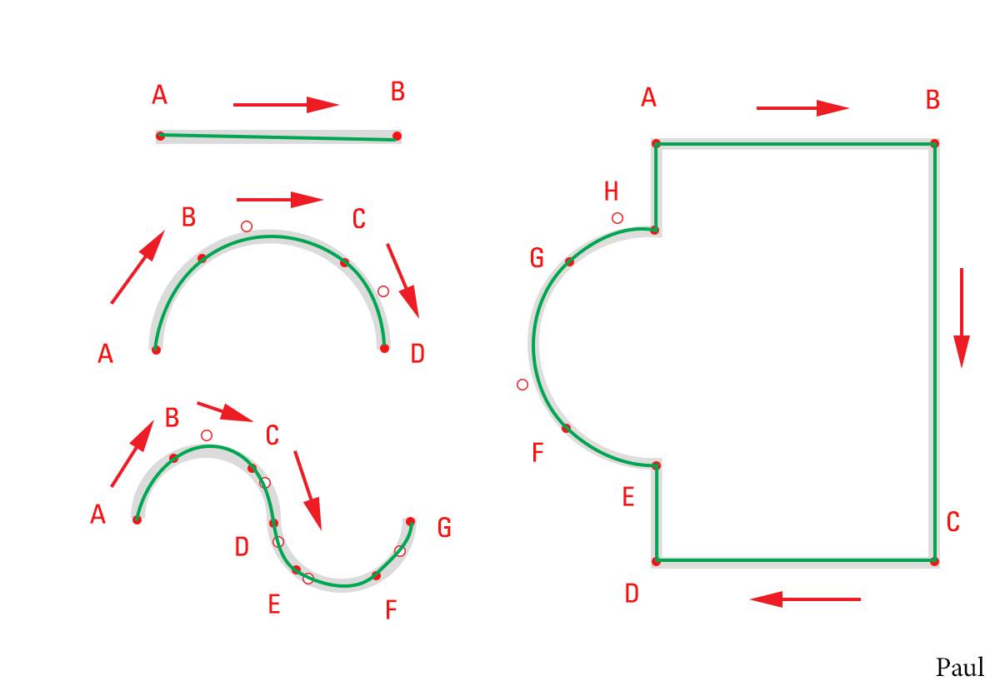
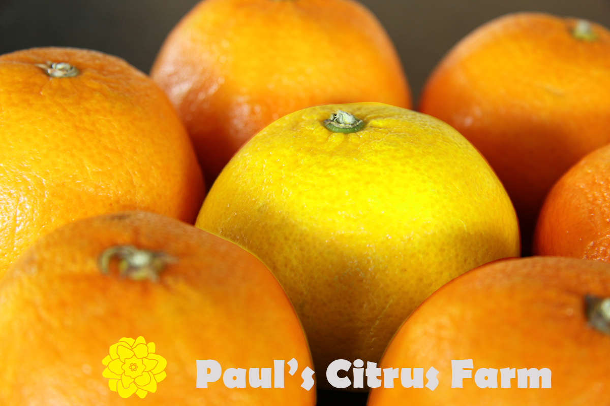

Paul Buske's Photoshop Experience
Vector Drawing
The drawing lesson was two parts. The first part was the first
image. We drew the first line straight from A -> B. The second
the line was a simple curve. The third line used two curves. The
final box transitioned between curves and straight lines.
The second part drew a line around the yellow lemon. At first
lemon was orange. We then edited the selected orange to be yellow.
Finally, we added typography for Paul's Citrus Farm, inserted a
white loge, and changed the color of the logo.

